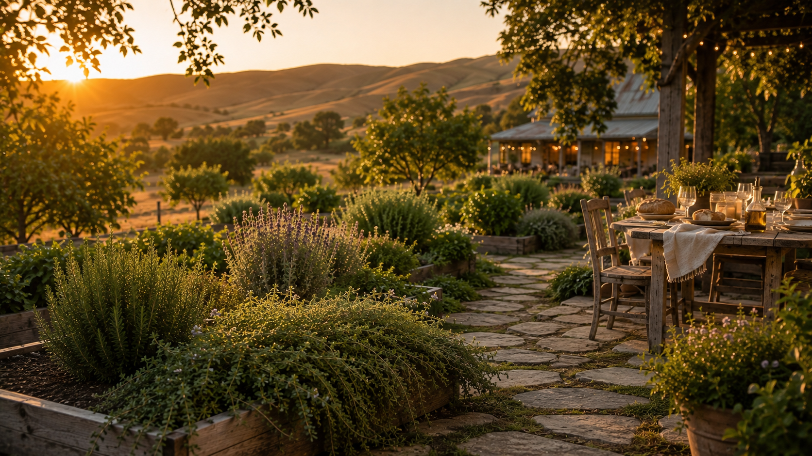
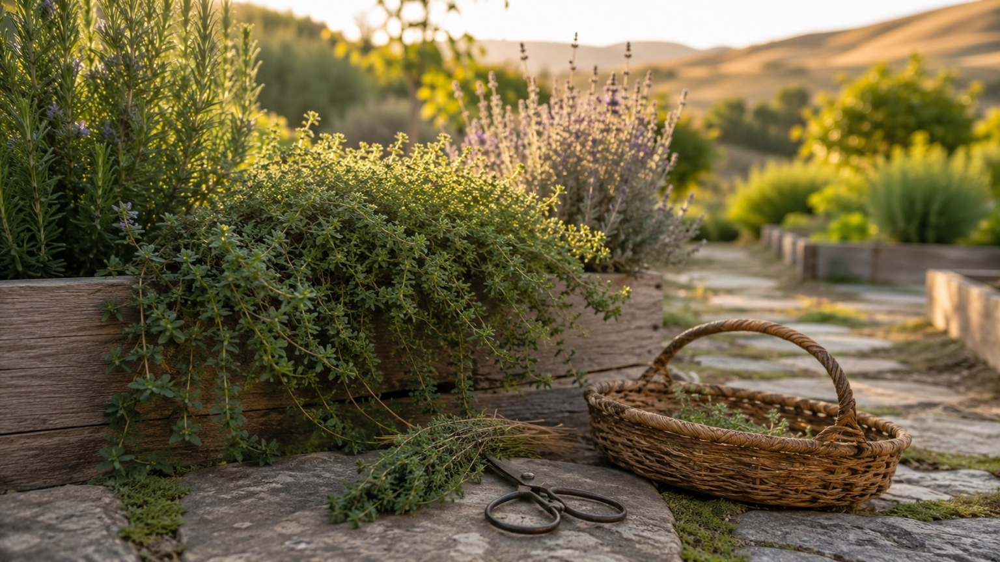
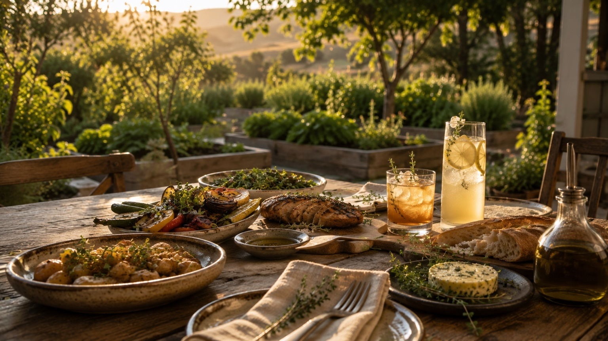
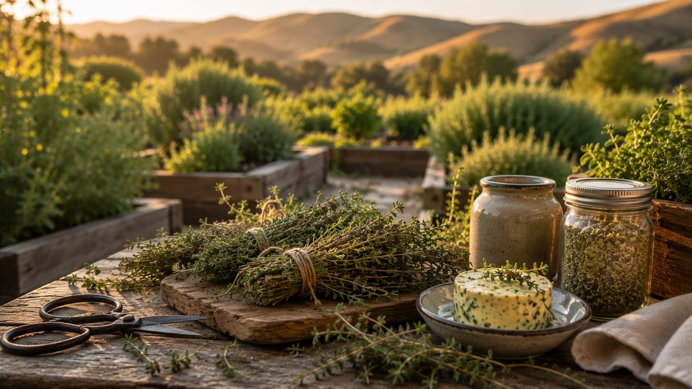
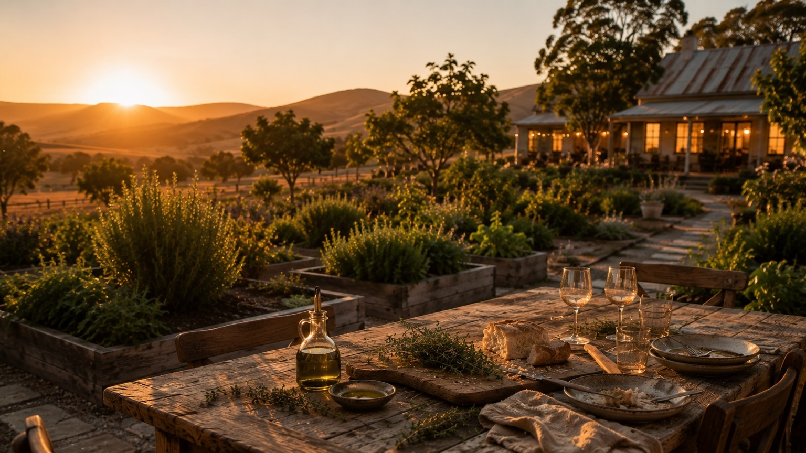

Thyme Harvest Hub
Grow, Harvest & Use Thyme From Garden to Table
When thyme brushes against my hands, the whole kitchen seems to come closer: roasted potatoes, bread on the table, soup on the stove, and people we love gathering for another meal made better by the garden.
Explore Thyme
From the garden to the pantry, the glass, and the meals we gather around.
This guide is one part of the Thyme story. Save the harvest, make the syrup, or browse the recipes that bring thyme back into the kitchen and around the table.
Discover how we grow, harvest, and enjoy one of our favorite herbs.
Explore the guide →Learn when to harvest thyme, how to dry it, freeze it, and bring its aroma into the cooler months.
Save the harvest →Learn how we capture fresh thyme flavor for cocktails, mocktails, lemonades, and seasonal drinks.
Make the syrup →Explore seasonal cocktails, mocktails, and recipes inspired by what we grow.
Browse recipes →The aroma of home
Why We Grow Thyme
Thyme is one of those herbs I can smell before I know what I am going to make with it. I brush past it in the garden, pinch a few stems between my fingers, and my mind immediately moves toward the table.
I rarely harvest thyme with only one recipe in mind. I harvest it with possibility: roasted potatoes, chicken after Mass, soup for a cold night, compound butter for bread, lemon thyme for lemonade, or a few sprigs for a bourbon sour when friends stay late and no one is quite ready to leave.
That is the gift of thyme in our home. It disappears into the meal and somehow makes everything feel more cared for. It seasons food, steadies drinks, perfumes the kitchen, and turns familiar ingredients into something generous.
When we grow thyme, we are not just growing an herb. We are growing the flavor of everyday dinners, Sunday meals, backyard gatherings, soup when someone needs comfort, and the small faithful rituals that bring our family back to the table.
Rooted in the garden. Raised around the table.
Keep thyme near a path, raised bed, or kitchen door so a few sprigs can become part of the walk back inside.
Visit the garden →Give thyme sun, drainage, and patience. It rewards steady care with small harvests that keep coming.
Grow it well →Bring thyme into soups, roasted vegetables, proteins, bread, compound butter, syrups, cocktails, and mocktails.
Gather around →Dry it, freeze it, blend it into butter, or turn it into herb salts and syrups so the garden follows you into another season.
Preserve it →
From our garden
The Harvest That Starts Dinner
Thyme does not ask for much space, but it earns its place every time I walk through the garden. It grows low and steady beside the path, near the raised beds, or in a pot close enough to the kitchen that harvesting it feels less like a task and more like part of making dinner.
Some plants make us pause because of their beauty. Thyme makes me pause because of its scent. The moment I pinch a few stems, that earthy, warm, savory fragrance rises onto my hands. It is the kind of smell that makes me think of the kitchen before I even get there.
That is when the ideas begin. Potatoes tonight. Maybe carrots with honey and thyme. Maybe grilled vegetables if friends are coming over. Maybe a small bundle tied with twine for someone who loves to cook. Maybe thyme syrup for lemon mocktails, or a few sprigs tucked beside chicken before it goes into the oven.
Around here, even the dogs seem to know when the garden walk is turning into dinner. They follow along the beds, noses down, while I clip what I need and carry the smell of thyme back toward the house. It is one of those small, ordinary moments that makes the whole day feel grounded.
Thyme is not just harvested from the garden. It carries the garden into everything that happens next — the cutting board, the stove, the glass, the serving platter, and eventually the table where we gather.
Around the table
The Flavor That Gathers People In
Thyme belongs to the food that makes our house feel lived in: soup simmering while bags land by the door, roasted potatoes passed across the table, chicken after Mass, grilled vegetables on a summer evening, bread pulled apart while everyone is still talking.
It also belongs in the glass. Lemon thyme brightens lemonade, sparkling water, gin, and honeyed mocktails. Common thyme deepens bourbon, whiskey sours, and savory garden drinks. But even there, thyme is rarely the star. It is the note that makes someone pause and say, "What is that?"

That is what makes thyme so valuable in our garden-to-table life. It enhances instead of overwhelms. It lifts vegetables, warms proteins, steadies cocktails, softens mocktails, and turns everyday food into hospitality.
When friends and family gather, thyme has usually already been there — in the butter, in the marinade, in the broth, in the syrup, in the smell drifting through the kitchen. It is part of the welcome before anyone sits down.
We say grace, we pass plates, we tell stories from the day, and somewhere in the middle of it all is the quiet flavor of the garden. Thyme reminds me that food does not have to be elaborate to be meaningful. Sometimes a warm meal, people we love, and a few stems clipped from the garden are more than enough.
At a glance
Thyme at a Glance
Thyme is one of the most dependable perennial herbs in our garden. It stays compact, asks for very little once established, and gives small harvests often enough that it becomes part of our everyday cooking, preserving, and garden-to-glass drinks.

Common Thyme
Earthy, steady, and deeply useful. This is the thyme we reach for in soups, roasted vegetables, chicken, potatoes, broth, marinades, compound butter, and savory syrups.
Lemon Thyme
Brighter and more citrus-forward, lemon thyme is especially good with lemonade, honey, gin, sparkling water, warm tea, mocktails, and light summer desserts.
Growing Habit
Low, woody, and compact. Thyme works beautifully along borders, in pots, near paths, between stones, or tucked into sunny corners of raised beds where you will brush against it often.
Best Harvest
Clip soft green tips before or during early flowering. Regular small harvests keep the plant tidy and give you the freshest flavor for meals, drinks, and preserving.
Save the season
Preserving the Aroma of Home
Thyme is one of the easiest herbs to carry from the garden into the pantry. A few small bundles hung in the kitchen become seasoning jars for winter soups, roasted vegetables, chicken dinners, broth, beans, potatoes, and the simple meals that bring us back to the table.
But drying is only the beginning. We use thyme for herb salt, compound butter, infused oil, frozen broth cubes, homemade seasoning blends, simple syrup, and small bundles shared with friends who love to cook. It is one of those herbs that keeps giving long after the fresh stems are cut.
We are not only preserving an ingredient. We are preserving the familiar comforts that make a home feel warm: the smell of dinner beginning, the promise of something good on the stove, and the quiet work of caring for people before the meal ever reaches the table.
Tie a few stems together and hang them in a warm, dry place until the leaves crumble easily from the stems.
Fold chopped thyme into softened butter with salt, lemon zest, honey, or garlic for bread, vegetables, chicken, steak, or a simple table gift.
Combine dried thyme with coarse salt, lemon zest, rosemary, or garlic for a pantry blend that makes weeknight cooking feel garden-grown.
Continue the garden
What to grow next
Thyme belongs beside the herbs that shape the life of a home — steady rosemary for year-round meals, peaceful lavender for beauty and hospitality, and bright lemon balm for tea, lemonade, porch afternoons, and gentle restoration.

The steady evergreen herb we reach for year-round in the garden, the kitchen, and the glass.
Read the guide
The herb of quiet beauty, hospitality, tea, syrup, and gentle moments around the table.
Read the guide
The cheerful herb of tea, lemonade, porch afternoons, and simple garden restoration.
Read the guide
Questions from the garden
Thyme FAQ
Yes — thyme is one of the more forgiving Mediterranean herbs. It is drought-tolerant, does not need rich soil, and grows well in pots, borders, and even between paving stones. The main requirements are full sun and good drainage. It is less demanding than lavender and more compact than rosemary, which makes it an excellent starting point for a kitchen garden or garden-to-glass bed.
Common thyme (Thymus vulgaris) is the most versatile for cocktail use — clean, earthy, and slightly floral without being dominated by any single note. Lemon thyme (Thymus citriodorus) is the second most useful, adding a bright citrus-herb character that works particularly well in gin drinks and anything with lemon or grapefruit. If you have space, grow both. Avoid highly ornamental varieties with variegated foliage — they often have less flavor than plain-leaf cultivars.
Common thyme has a classic earthy, slightly medicinal herb flavor that works well across a wide range of spirits and styles. Lemon thyme adds a clear, bright citrus note on top of the base thyme character — it smells like lemon and thyme together rather than just one or the other. In a gin and tonic, lemon thyme lifts the citrus notes of the gin. In a whiskey sour, common thyme deepens the herbal character. They're different enough to be worth growing separately.
Yes — thyme is a perennial herb that persists year-round in zones 4 through 9. It does not die back completely in winter like mint; in milder climates it keeps most of its leaves and can be harvested lightly throughout the cold months. In colder zones it may look ragged by late winter but regrows vigorously in spring. It is more cold-hardy than lavender and rosemary, making it one of the most reliable perennial herbs in the kitchen garden.
Combine equal parts sugar and water in a saucepan over medium heat. Once the sugar dissolves, remove from heat, add 6 to 8 fresh thyme sprigs, and steep for 20 to 30 minutes. Thyme is more forgiving than lavender or rosemary — it takes longer to become overpowering, so you have more time to get the steeping right. Taste, strain, cool, and refrigerate in a sealed jar for up to 3 weeks. Lemon thyme syrup is made identically and produces a notably brighter result.
Gin is thyme's most natural partner — the herbal, slightly floral profile of thyme complements gin botanicals rather than competing with them. Whiskey works well with common thyme, particularly in sour format where thyme deepens the herbal character. Tequila and thyme is an excellent combination, especially with lemon or grapefruit. Vodka's neutrality makes it a good canvas for lemon thyme in particular. Thyme is one of the most spirit-agnostic cocktail herbs — it works across almost every category when used with restraint.
Yes, and thyme muddled gently is one of the more pleasant ways to bring the garden into a drink. Unlike rosemary, thyme's stems are soft and thin, so young tip growth releases clean herbal flavor without turning harsh. Press gently 3 to 4 times; the goal is bruising, not pulverizing.
Dried thyme works reasonably well in syrups — the flavor holds better than with delicate herbs like basil. For garnishes, however, dried thyme is too small and fragile to present well in a glass. Fresh thyme sprigs are far more attractive and practical for garnish use. For syrups and infusions when fresh isn't available, dried thyme is a legitimate substitute at roughly half the volume of fresh.
The most common cause is overwatering or poor drainage — thyme rots quickly in wet soil. It's a common mistake to water thyme on the same schedule as more moisture-loving plants. Let it dry out between waterings. The second most common cause is insufficient sun — thyme in partial shade grows soft and prone to rot. If your thyme is going woody and producing little new growth, it may simply be old; most thyme plants benefit from division or replacement every 3 to 5 years.
Thyme flowers in early summer — small, delicate blooms in shades of pink, purple, or white depending on the variety. The flowers are completely edible and make excellent cocktail garnishes: a small sprig with flowers in bloom in a glass of gin and tonic is one of the prettiest garden-to-glass moments. The flavor of flowering thyme is slightly lighter than pre-flower leaf growth, but still excellent. After flowering, trim the plant to encourage a new flush of leafy growth.
Drink responsibly. Every mocktail on this site is just as good as the cocktail version. Enjoy the garden. Enjoy the bar. Be safe, be kind, and look after each other.